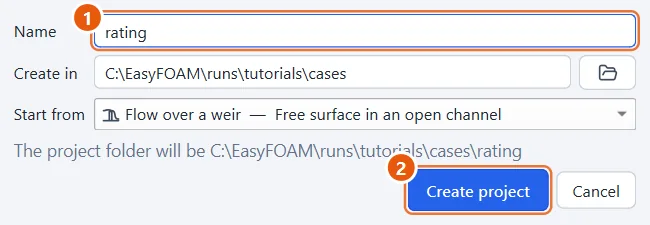
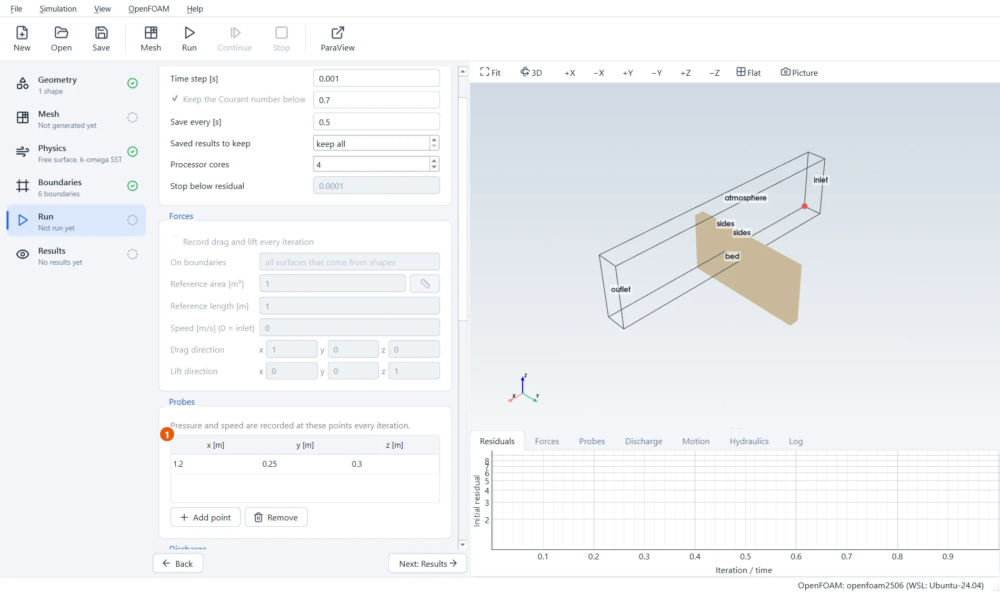
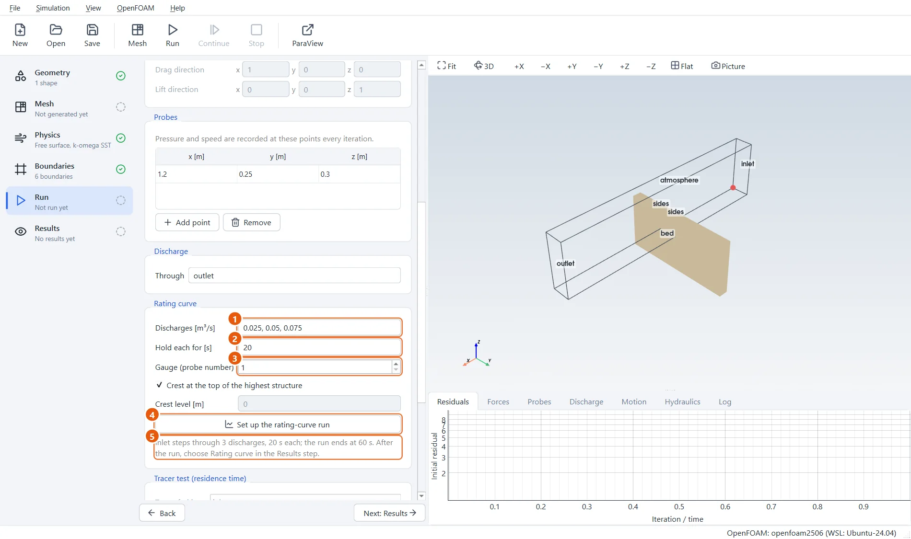
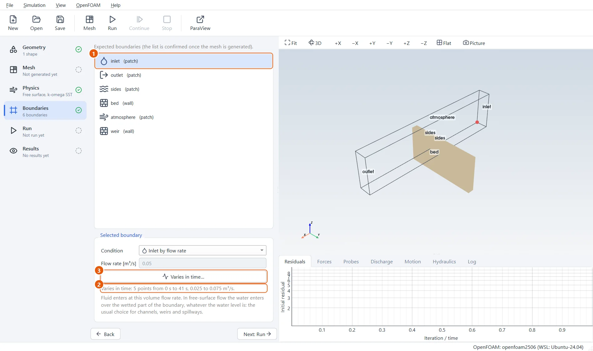
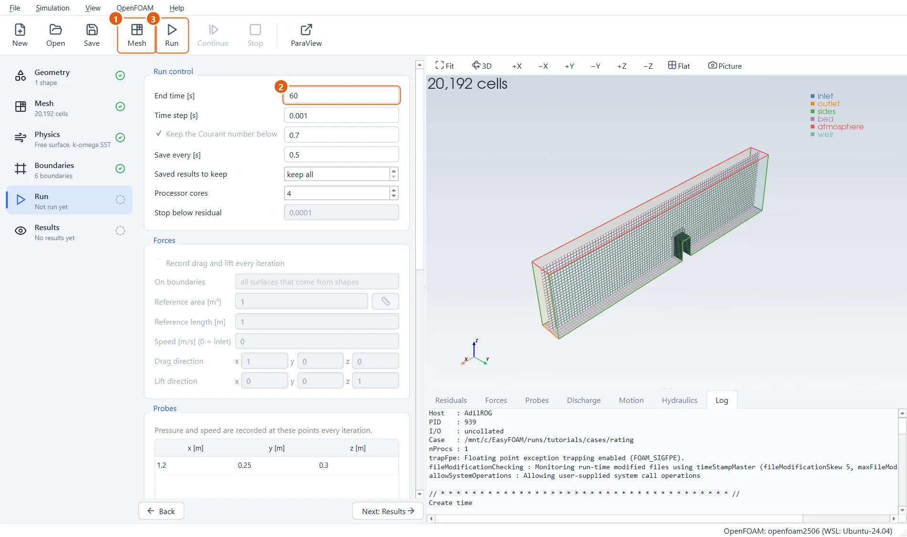
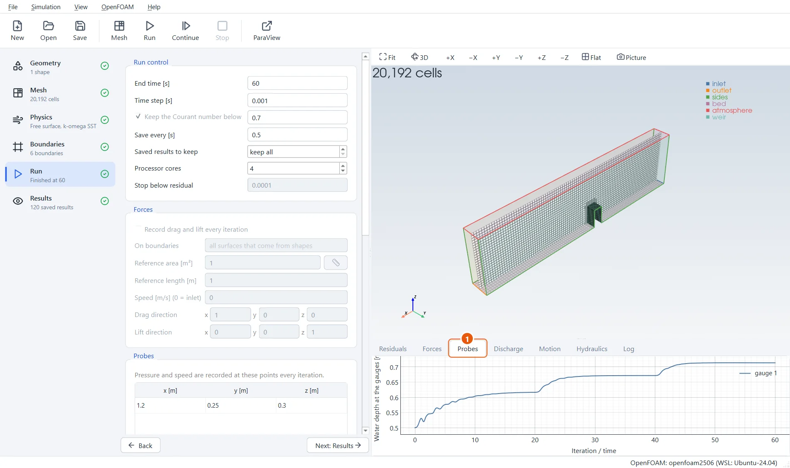
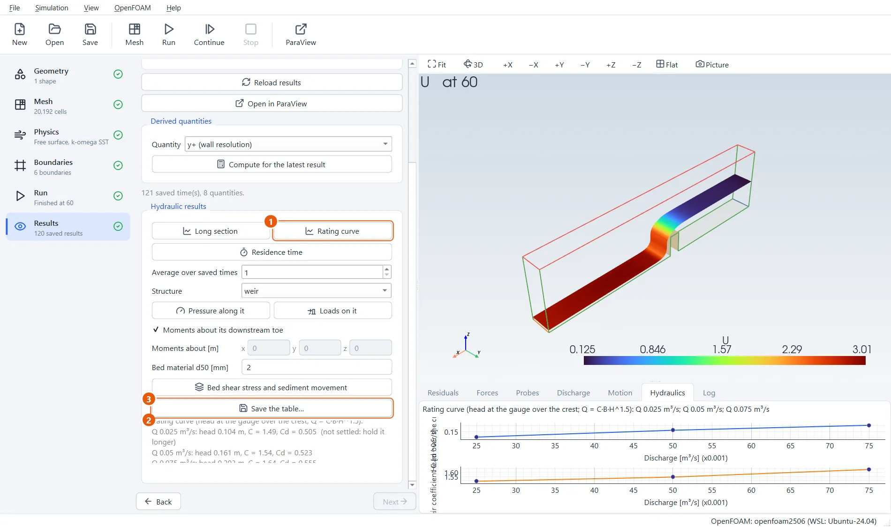

Tutorial 13 of 17
Rating curve of a weir
Step the inflow through three discharges in one run and read off the head over the weir, its weir coefficient and whether each level settled.
A rating curve tells how high the water stands for each discharge: the relation a weir or a gauging station is used for. Measuring one point at a time means one run per discharge. Here a single run steps the inflow through several discharges, holds each one until the level settles, and EasyFOAM reads off the head over the crest at a gauge for each step.
This tutorial uses the weir of the earlier Flow over a weir tutorial: 0.5 m wide, a crest 0.51 m above the bed, with a gauge in the reservoir.
What you will learn
- set up a rating-curve run from a list of discharges
- see the inflow step up as a time table at the inlet
- read the head, the weir coefficient C and Cd for each discharge
- tell from the run whether each level had settled
Computer time: about twenty minutes on four cores.
1Open the example
Start EasyFOAM. This case is one of the examples on the start page: it comes with every setting filled in, and this tutorial walks through each of them so that you understand the case and could build it yourself.
- Click Flow over a weir.

2Name the project
The project is an ordinary folder that EasyFOAM creates for you.
- Type a name, for example
rating. - Click Create project.


3The gauge
The rating curve is read at a gauge: a probe point in the reservoir, well upstream of the crest, where the water is calm. The weir example already has one.
- Probe 1 at
1.2,0.25,0.3: the gauge in the reservoir.


4Set up the sweep
Under Rating curve give the discharges, smallest first, and how long to hold each. Twenty seconds is enough here for the reservoir to fill to each new level and for the outflow to catch up. The crest is found by itself: the top of the highest structure, 0.51 m.
- Discharges:
0.025, 0.05, 0.075m³/s. - Hold each for:
20s. - Gauge: probe
1. - Press Set up the rating-curve run.
- What was done: the run now ends at 60 s.


5The inflow steps up
In Boundaries, the inlet now follows a time table: each discharge held for 20 seconds, with a short ramp between them. Flow changes in time… opens the table if you want to change it.
- The boundary inlet.
- The inflow: three steps, from 0.025 to 0.075 m³/s.
- Flow changes in time… opens the table.


6Mesh and run
Make the mesh and run the 60 seconds on four cores.
- Click Mesh in the toolbar (or press F5).
- End time:
60s, set by the sweep. - Click Run in the toolbar (or press F6).


7The level steps up
The Probes tab shows the water at the gauge rising with each step of the inflow and levelling off before the next one: that level, over the crest, is the head for that discharge.
- Open the Probes tab: the water depth at the gauge over time.


8The rating curve
In Results, press Rating curve. For each discharge EasyFOAM averages the level at the gauge over the last part of its hold and gives the head over the crest, the weir coefficient C = Q / (B H^1.5) and the discharge coefficient Cd. The head rises from about 0.10 m to 0.20 m, and C from about 1.5 to 1.65, a little below the 1.70 of an ideal broad-crested weir: a square-edged crest loses some energy. The first point is marked not settled: at the start the channel below the weir was still filling, and 20 seconds were not quite enough.
- Press Rating curve.
- Head, C and Cd for each discharge.
- Save the table… writes them to a CSV file.

